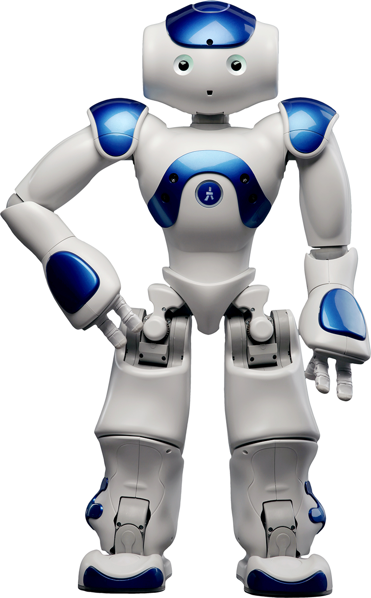
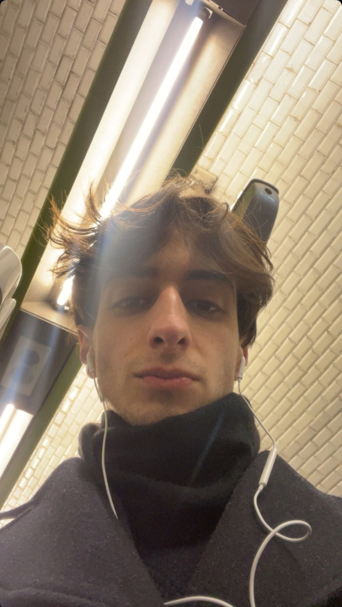
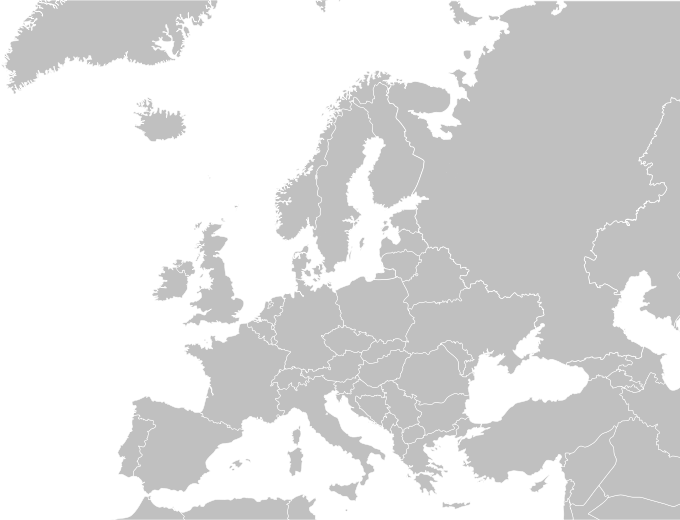
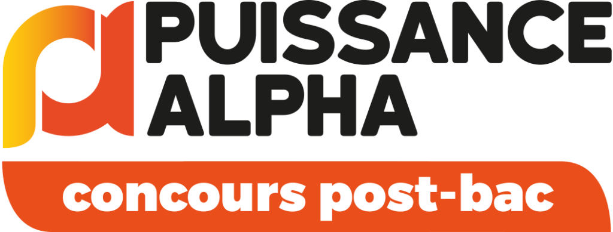
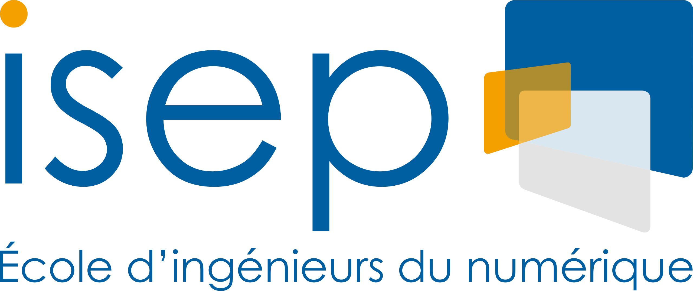
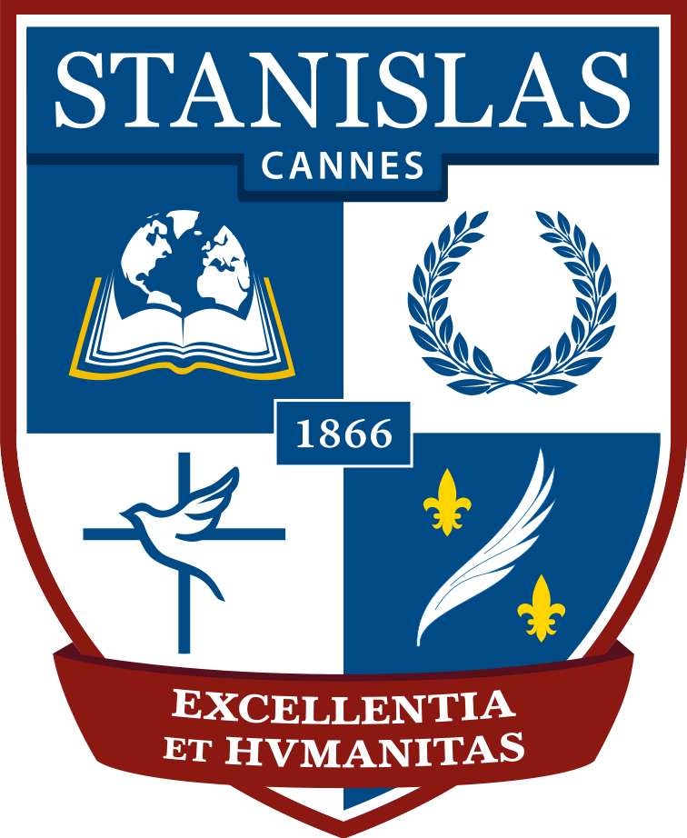
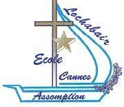

A propos de moi
Je suis Alexandre Sintes, étudiant en deuxième année du cycle préparatoire intégré international à l'ISEP. Passionné de technologie, robotique, et projets innovants, je suis engagé dans le développement de solutions techniques et la communication scientifique.
Date de naissance : 14/11/2005 ; Signe astrologique : Scoprion


- 2023 - Aujourd'hui : Cycle Préparatoire Intégré International, ISEP Paris
- 2022 : Baccalauréat Général, Lycée Stanislas Cannes (Spécialités : Mathématiques, Physique-Chimie)
- 2019 : Diplôme National du Brevet - mention bien
- Certifications : PIX, Certification Voltaire (679/1000), TOEIC (700/1000)
- Autres : Code de la route, Certification à la JDC
Formation
École primaire
Assomption Lochabair
Assomption Lochabair
2009 - 2016
Lycée Stanislas Cannes
2016 - 2023
ISEP – I1
(cycle intégré international)
(cycle intégré international)
2023 - 2024
ISEP – I2
(cycle intégré international)
(cycle intégré international)
2024 - 2025
Expériences Professionnelles
Stagiaire
Ampere
Ampere
14 avril 2025 - Aujourd’hui
Projets ISEP
- Simulateur de gestion de parking en Python avec interface grpahique Tkinter
- Jeu Tamagotchi en python avec interface graphique tkinter
- Robotique : Codage du robomaster en python
- Sonomètre numérique et analogique
Technologies
- Matlab, Simulink
- Intel Quartus Prime
- Windows - Ubuntu (Linux)
- bases Ros2 & bases C++
- Python, tkinter, github, vscode
- HTML - CSS
- Microsoft Office (PowerPoint, Word, Excel)
- GeoGebra, Regressi
- Logisim
- Canva
Langues
- Français (langue maternelle)

- Anglais (niveau B2)

- Espagnol (niveau B2)

Pays visités
- France (Cannes, Avignon, Antibes, Biarritz, Paris, Ajaccio)
- Italie (Florence, Pise, Bordighera)
- Espagne (Majorque)
- Allemagne (Rust)
- Royaume-Uni (London)
- Monaco (Monaco)
- Maroc (Marrakech, Essaouira)

Sports pratiqués
- Atlétisme - AC Cannes
- Ski - ESF - niveau étoile de bronze
- Natation - CN Cannes
- Judo - JC Cannes
Centre d'intérets
- Ski : Courchevel, Val d'Allos, Valberg, Les Saisies, Serre Chevalier, Auron, Isola 2000, Alpe d'Huez,
- Politique
- Mode
- Cinématographie
- Photographie
Contact
📧 Email : alexandre.sintes@eleve.isep.fr
🔗 LinkedIn : linkedin.com/in/alexandre-sintes
💻 GitHub : github.com/alexandresintes
📱 Twitter : @alex_sts70154
📱 Téléphone : 07 87 03 43 53



